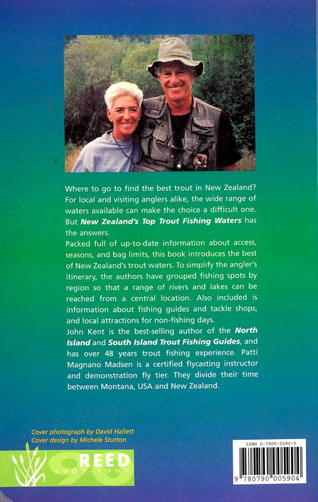
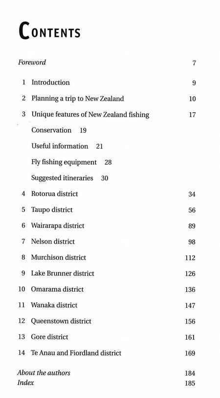

愛読者様へプレゼント
「New Zealand's Top Trout Fishing Waters」
John Kent, Patti Magnano Madsen 共著
Fish and Tips を訪れてくださった方、日頃から愛読していただいている皆様、まことにありがとうございます。年に数回しか更新できていないサイトですが、一応月間に700件ほどのアクセスがあります。（笑） 大変感謝しております。
ささやかではありますが、感謝の印として、John Kent, Patti Magnano Madsen 両氏の共著による「New Zealand's Top Trout Fishing Waters」という、ニュージーランドの釣り場と釣り方のガイドブックをプレゼントさせていただきたいと思います。
裏表紙の解説は、以下のようです。

ニュージーランドで最高のマスはどこに行けば見つかりますか？ 地元の釣り人にとっても、訪れる釣り人にとっても、釣り場の種類が多岐に渡るため、選択は難しくなります。しかし、New Zealand's Top Trout Fishing Waters がその答えを持っています。
この本は、ニュージーランドにおいて鱒釣りができる釣り場に関して、最高のものを紹介しています。釣り人の旅程を簡単にするために、著者らは、中央の場所から広範囲の川と湖に到達できるように、地域ごとに釣りスポットをグループ化しています。また、釣りガイドやタックルショップに関する情報や、釣りをしない日のための地元のアトラクションも含まれています。
ジョン・ケント氏は北島と南島のマス釣りガイドのベストセラー作家で、48年以上のマス釣りの経験があります。パティ・マグナノ・マドセン氏は、フライキャスティングのインストラクターであり、デモンストレーション用のフライ・タイヤーです。彼らはアメリカのモンタナ州とニュージーランド双方で釣りの時間を楽しんでいます。

目次 和訳
- 序文
- 1 はじめに
- 2 ニュージーランドへの旅行の計画
- 3 ニュージーランドの釣りのユニークな特徴
自然環境保護
役に立つ情報
フライフィッシングのタックル
お勧めの旅程 - 4 ロトルア地方
- 5 タウポ地方
- 6 ワイララパ地方
- 7 ネルソン地方
- 8 マーチソン地方
- 9 レイク・ブラナー地方
- 10 オマラマ地方
- 11 ワナカ地方
- 12 クイーンズタウン地方
- 13 ゴア地方
- 14 テ・アナウ及びフィヨルドランド地方
- 著者について
- 索引
この本を希望される方は、
takeshi_go_ito(at)yahoo.co.jp
まで、メールをお送りくださいますようお願いいたします。お手数ですが、半角赤太字の(at)を、半角@に置き換えて下さい。
その際、メールの件名に 「New Zealand's Top Trout Fishing Waters」希望 と書いていただき、本文には、Fish and Tips をお読みいただいて、
- 良かった記事
- 悪かった記事
- 伊藤の事実誤認の指摘
- これから取り上げて欲しいトピック
- その他 感想
応募メールの締め切りは、なにぶんアクセスの疎らなサイトですので、無期限！（笑）とさせていただき、メールを送付していただいた方から先着で、発送させていただきます。奮ってご応募ください。
サイトマップ
ホームへ
お問い合わせ